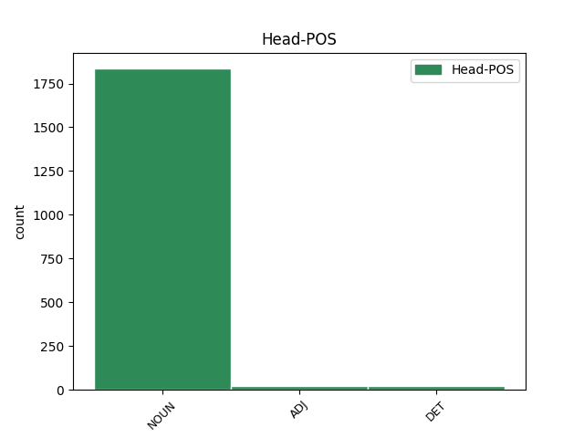

Distribution of features within this leaf

Agreement Rules sorted by frequency.
- When the dependent token is the conjunct(conj) of the head token, and the head token is NOUN and the dependent token is NOUN.
1 Kroaternes _ _ _ _ 0 _ _ _
2 og _ _ _ _ 0 _ _ _
3 slovenernes _ _ _ _ 0 _ _ _
4 glæde glæde NOUN _ Definite=Ind|Gender=Com|Number=Sing 0 _ _ _
5 - _ _ _ _ 0 _ _ _
6 og _ _ _ _ 0 _ _ _
7 selvglæde selvglæde NOUN _ Definite=Ind|Gender=Com|Number=Sing 4 conj _ _
8 - _ _ _ _ 0 _ _ _
9 var _ _ _ _ 0 _ _ _
10 dog _ _ _ _ 0 _ _ _
11 ubesmittet _ _ _ _ 0 _ _ _
12 . _ _ _ _ 0 _ _ _
1 " _ _ _ _ 0 _ _ _
2 Orlando _ _ _ _ 0 _ _ _
3 har _ _ _ _ 0 _ _ _
4 forårsaget _ _ _ _ 0 _ _ _
5 noget _ _ _ _ 0 _ _ _
6 af _ _ _ _ 0 _ _ _
7 en _ _ _ _ 0 _ _ _
8 revolution _ _ _ _ 0 _ _ _
9 i _ _ _ _ 0 _ _ _
10 Palermo _ _ _ _ 0 _ _ _
11 , _ _ _ _ 0 _ _ _
12 " _ _ _ _ 0 _ _ _
13 siger _ _ _ _ 0 _ _ _
14 Antonio _ _ _ _ 0 _ _ _
15 Cimino _ _ _ _ 0 _ _ _
16 fra _ _ _ _ 0 _ _ _
17 " _ _ _ _ 0 _ _ _
18 Den _ _ _ _ 0 _ _ _
19 Koordinerede _ _ _ _ 0 _ _ _
20 Bevægelse bevægelse NOUN _ Definite=Ind|Gender=Com|Number=Sing 0 _ _ _
21 mod _ _ _ _ 0 _ _ _
22 Mafiaen _ _ _ _ 0 _ _ _
23 " _ _ _ _ 0 _ _ _
24 , _ _ _ _ 0 _ _ _
25 en _ _ _ _ 0 _ _ _
26 organisation organisation NOUN _ Definite=Ind|Gender=Com|Number=Sing 20 mod _ SpaceAfter=No
27 , _ _ _ _ 0 _ _ _
28 der _ _ _ _ 0 _ _ _
29 er _ _ _ _ 0 _ _ _
30 startet _ _ _ _ 0 _ _ _
31 for _ _ _ _ 0 _ _ _
32 at _ _ _ _ 0 _ _ _
33 bekæmpe _ _ _ _ 0 _ _ _
34 organiseret _ _ _ _ 0 _ _ _
35 kriminalitet _ _ _ _ 0 _ _ _
36 på _ _ _ _ 0 _ _ _
37 Sicilien _ _ _ _ 0 _ _ _
38 . _ _ _ _ 0 _ _ _
1 Kroaternes kroat NOUN _ Case=Gen|Definite=Def|Gender=Com|Number=Plur 4 mod@poss _ _
2 og _ _ _ _ 0 _ _ _
3 slovenernes _ _ _ _ 0 _ _ _
4 glæde glæde NOUN _ Definite=Ind|Gender=Com|Number=Sing 0 _ _ _
5 - _ _ _ _ 0 _ _ _
6 og _ _ _ _ 0 _ _ _
7 selvglæde _ _ _ _ 0 _ _ _
8 - _ _ _ _ 0 _ _ _
9 var _ _ _ _ 0 _ _ _
10 dog _ _ _ _ 0 _ _ _
11 ubesmittet _ _ _ _ 0 _ _ _
12 . _ _ _ _ 0 _ _ _
1 Hornfisken _ _ _ _ 0 _ _ _
2 arriverer _ _ _ _ 0 _ _ _
3 så _ _ _ _ 0 _ _ _
4 småt _ _ _ _ 0 _ _ _
5 , _ _ _ _ 0 _ _ _
6 endnu _ _ _ _ 0 _ _ _
7 til _ _ _ _ 0 _ _ _
8 luksuspris luksuspris NOUN _ Definite=Ind|Gender=Com|Number=Sing 0 _ _ _
9 - _ _ _ _ 0 _ _ _
10 35 _ _ _ _ 0 _ _ _
11 kr. krone NOUN _ Definite=Ind|Gender=Com|Number=Plur 8 appos _ _
12 for _ _ _ _ 0 _ _ _
13 en _ _ _ _ 0 _ _ _
14 halvkg _ _ _ _ 0 _ _ _
15 krabat _ _ _ _ 0 _ _ _
16 . _ _ _ _ 0 _ _ _
1 Han _ _ _ _ 0 _ _ _
2 smiler _ _ _ _ 0 _ _ _
3 stadig _ _ _ _ 0 _ _ _
4 sit _ _ _ _ 0 _ _ _
5 brede _ _ _ _ 0 _ _ _
6 smil _ _ _ _ 0 _ _ _
7 , _ _ _ _ 0 _ _ _
8 han _ _ _ _ 0 _ _ _
9 må _ _ _ _ 0 _ _ _
10 stadig _ _ _ _ 0 _ _ _
11 ud _ _ _ _ 0 _ _ _
12 og _ _ _ _ 0 _ _ _
13 bruge _ _ _ _ 0 _ _ _
14 sine _ _ _ _ 0 _ _ _
15 hænder _ _ _ _ 0 _ _ _
16 , _ _ _ _ 0 _ _ _
17 og _ _ _ _ 0 _ _ _
18 i _ _ _ _ 0 _ _ _
19 et _ _ _ _ 0 _ _ _
20 66 _ _ _ _ 0 _ _ _
21 år år NOUN _ Definite=Ind|Gender=Neut|Number=Plur 22 udep _ _
22 gammelt gammel ADJ _ Definite=Ind|Degree=Pos|Gender=Neut|Number=Sing 0 _ _ _
23 liv _ _ _ _ 0 _ _ _
24 , _ _ _ _ 0 _ _ _
25 hvor _ _ _ _ 0 _ _ _
26 glæderne _ _ _ _ 0 _ _ _
27 er _ _ _ _ 0 _ _ _
28 flere _ _ _ _ 0 _ _ _
29 end _ _ _ _ 0 _ _ _
30 bekymringerne _ _ _ _ 0 _ _ _
31 , _ _ _ _ 0 _ _ _
32 er _ _ _ _ 0 _ _ _
33 det _ _ _ _ 0 _ _ _
34 to _ _ _ _ 0 _ _ _
35 dagligdags _ _ _ _ 0 _ _ _
36 og _ _ _ _ 0 _ _ _
37 samfundsskabte _ _ _ _ 0 _ _ _
38 ting _ _ _ _ 0 _ _ _
39 , _ _ _ _ 0 _ _ _
40 der _ _ _ _ 0 _ _ _
41 irriterer _ _ _ _ 0 _ _ _
42 . _ _ _ _ 0 _ _ _
1 Deltager _ _ _ _ 0 _ _ _
2 De _ _ _ _ 0 _ _ _
3 også _ _ _ _ 0 _ _ _
4 i _ _ _ _ 0 _ _ _
5 " _ _ _ _ 0 _ _ _
6 Ugens _ _ _ _ 0 _ _ _
7 Overraskelse _ _ _ _ 0 _ _ _
8 " _ _ _ _ 0 _ _ _
9 på _ _ _ _ 0 _ _ _
10 side _ _ _ _ 0 _ _ _
11 47 _ _ _ _ 0 _ _ _
12 , _ _ _ _ 0 _ _ _
13 så _ _ _ _ 0 _ _ _
14 kommer _ _ _ _ 0 _ _ _
15 De _ _ _ _ 0 _ _ _
16 blot _ _ _ _ 0 _ _ _
17 kuponen _ _ _ _ 0 _ _ _
18 i _ _ _ _ 0 _ _ _
19 én _ _ _ _ 0 _ _ _
20 kuvert _ _ _ _ 0 _ _ _
21 mærket _ _ _ _ 0 _ _ _
22 " _ _ _ _ 0 _ _ _
23 Ugens uge NOUN _ Case=Gen|Definite=Def|Gender=Com|Number=Sing 0 _ _ _
24 Overraskelse _ _ _ _ 0 _ _ _
25 - _ _ _ _ 0 _ _ _
26 uge uge NOUN _ Definite=Ind|Gender=Com|Number=Sing 23 list _ _
27 47 _ _ _ _ 0 _ _ _
28 " _ _ _ _ 0 _ _ _
29 og _ _ _ _ 0 _ _ _
30 " _ _ _ _ 0 _ _ _
31 DUPLO _ _ _ _ 0 _ _ _
32 legetøj _ _ _ _ 0 _ _ _
33 " _ _ _ _ 0 _ _ _
34 . _ _ _ _ 0 _ _ _
1 I _ _ _ _ 0 _ _ _
2 løbet _ _ _ _ 0 _ _ _
3 af _ _ _ _ 0 _ _ _
4 firserne _ _ _ _ 0 _ _ _
5 fik _ _ _ _ 0 _ _ _
6 naturvidenskaben _ _ _ _ 0 _ _ _
7 sig _ _ _ _ 0 _ _ _
8 et _ _ _ _ 0 _ _ _
9 andet _ _ _ _ 0 _ _ _
10 og _ _ _ _ 0 _ _ _
11 mere _ _ _ _ 0 _ _ _
12 positivt positiv ADJ _ Definite=Ind|Degree=Pos|Gender=Neut|Number=Sing 0 _ _ _
13 image image NOUN _ Definite=Ind|Gender=Neut|Number=Sing 12 conj _ SpaceAfter=No
14 , _ _ _ _ 0 _ _ _
15 nemlig _ _ _ _ 0 _ _ _
16 som _ _ _ _ 0 _ _ _
17 leverandør _ _ _ _ 0 _ _ _
18 af _ _ _ _ 0 _ _ _
19 svar _ _ _ _ 0 _ _ _
20 på _ _ _ _ 0 _ _ _
21 de _ _ _ _ 0 _ _ _
22 store _ _ _ _ 0 _ _ _
23 spørgsmål _ _ _ _ 0 _ _ _
24 : _ _ _ _ 0 _ _ _
25 Hvornår _ _ _ _ 0 _ _ _
26 begyndte _ _ _ _ 0 _ _ _
27 universet _ _ _ _ 0 _ _ _
28 ? _ _ _ _ 0 _ _ _
1 I _ _ _ _ 0 _ _ _
2 det det DET _ Gender=Neut|Number=Sing|PronType=Dem 0 _ _ _
3 hele hele NOUN _ Definite=Ind|Gender=Neut|Number=Sing 2 unk@fixed _ _
4 taget _ _ _ _ 0 _ _ _
5 vrimler _ _ _ _ 0 _ _ _
6 det _ _ _ _ 0 _ _ _
7 med _ _ _ _ 0 _ _ _
8 museer _ _ _ _ 0 _ _ _
9 på _ _ _ _ 0 _ _ _
10 Jersey _ _ _ _ 0 _ _ _
11 : _ _ _ _ 0 _ _ _
12 Bunker-museum _ _ _ _ 0 _ _ _
13 , _ _ _ _ 0 _ _ _
14 motor-museum _ _ _ _ 0 _ _ _
15 , _ _ _ _ 0 _ _ _
16 museum _ _ _ _ 0 _ _ _
17 med _ _ _ _ 0 _ _ _
18 dampmotorer _ _ _ _ 0 _ _ _
19 , _ _ _ _ 0 _ _ _
20 militær-museum _ _ _ _ 0 _ _ _
21 og _ _ _ _ 0 _ _ _
22 det _ _ _ _ 0 _ _ _
23 nyindrettede _ _ _ _ 0 _ _ _
24 Jersey-museum _ _ _ _ 0 _ _ _
25 for _ _ _ _ 0 _ _ _
26 bare _ _ _ _ 0 _ _ _
27 at _ _ _ _ 0 _ _ _
28 nævne _ _ _ _ 0 _ _ _
29 nogle _ _ _ _ 0 _ _ _
30 få _ _ _ _ 0 _ _ _
31 . _ _ _ _ 0 _ _ _
1 Den _ _ _ _ 0 _ _ _
2 kvinde _ _ _ _ 0 _ _ _
3 , _ _ _ _ 0 _ _ _
4 der _ _ _ _ 0 _ _ _
5 ligger _ _ _ _ 0 _ _ _
6 på _ _ _ _ 0 _ _ _
7 hospitalet _ _ _ _ 0 _ _ _
8 i _ _ _ _ 0 _ _ _
9 Paris _ _ _ _ 0 _ _ _
10 , _ _ _ _ 0 _ _ _
11 er _ _ _ _ 0 _ _ _
12 ikke _ _ _ _ 0 _ _ _
13 din _ _ _ _ 0 _ _ _
14 kærlighed kærlighed NOUN _ Definite=Ind|Gender=Com|Number=Sing 15 comp:obj _ _
15 værdig værdig ADJ _ Definite=Ind|Degree=Pos|Gender=Com|Number=Sing 0 _ _ _
16 . _ _ _ _ 0 _ _ _
Disagree Examples:
1 Under _ _ _ _ 0 _ _ _
2 rejser rejse NOUN _ Definite=Ind|Gender=Com|Number=Plur 0 _ _ _
3 og _ _ _ _ 0 _ _ _
4 ophold ophold NOUN _ Definite=Ind|Gender=Neut|Number=Plur 2 conj _ _
5 i _ _ _ _ 0 _ _ _
6 udlandet _ _ _ _ 0 _ _ _
7 følger _ _ _ _ 0 _ _ _
8 sygeplejersker _ _ _ _ 0 _ _ _
9 og _ _ _ _ 0 _ _ _
10 hjælpere _ _ _ _ 0 _ _ _
11 med _ _ _ _ 0 _ _ _
12 . _ _ _ _ 0 _ _ _
1 Hele _ _ _ _ 0 _ _ _
2 det _ _ _ _ 0 _ _ _
3 smukt _ _ _ _ 0 _ _ _
4 restaurerede _ _ _ _ 0 _ _ _
5 hus _ _ _ _ 0 _ _ _
6 vrimler _ _ _ _ 0 _ _ _
7 med _ _ _ _ 0 _ _ _
8 børn _ _ _ _ 0 _ _ _
9 - _ _ _ _ 0 _ _ _
10 Elise _ _ _ _ 0 _ _ _
11 Gug _ _ _ _ 0 _ _ _
12 har _ _ _ _ 0 _ _ _
13 selv _ _ _ _ 0 _ _ _
14 tre _ _ _ _ 0 _ _ _
15 - _ _ _ _ 0 _ _ _
16 og _ _ _ _ 0 _ _ _
17 andelsforeningen _ _ _ _ 0 _ _ _
18 er _ _ _ _ 0 _ _ _
19 så _ _ _ _ 0 _ _ _
20 glad _ _ _ _ 0 _ _ _
21 for _ _ _ _ 0 _ _ _
22 selskabeligt _ _ _ _ 0 _ _ _
23 samvær _ _ _ _ 0 _ _ _
24 , _ _ _ _ 0 _ _ _
25 at _ _ _ _ 0 _ _ _
26 den _ _ _ _ 0 _ _ _
27 har _ _ _ _ 0 _ _ _
28 egen _ _ _ _ 0 _ _ _
29 café café NOUN _ Definite=Ind|Gender=Com|Number=Sing 0 _ _ _
30 og _ _ _ _ 0 _ _ _
31 festlokale festlokale NOUN _ Definite=Ind|Gender=Neut|Number=Sing 29 conj _ SpaceAfter=No
32 . _ _ _ _ 0 _ _ _
1 Når _ _ _ _ 0 _ _ _
2 forløbet _ _ _ _ 0 _ _ _
3 i _ _ _ _ 0 _ _ _
4 kommunalt _ _ _ _ 0 _ _ _
5 regi _ _ _ _ 0 _ _ _
6 slutter _ _ _ _ 0 _ _ _
7 til _ _ _ _ 0 _ _ _
8 december _ _ _ _ 0 _ _ _
9 , _ _ _ _ 0 _ _ _
10 håber _ _ _ _ 0 _ _ _
11 hun _ _ _ _ 0 _ _ _
12 , _ _ _ _ 0 _ _ _
13 at _ _ _ _ 0 _ _ _
14 hendes _ _ _ _ 0 _ _ _
15 og _ _ _ _ 0 _ _ _
16 mandens mand NOUN _ Case=Gen|Definite=Def|Gender=Com|Number=Sing 0 _ _ _
17 firma firma NOUN _ Definite=Ind|Gender=Neut|Number=Sing 16 conj _ _
18 er _ _ _ _ 0 _ _ _
19 vokset _ _ _ _ 0 _ _ _
20 stort _ _ _ _ 0 _ _ _
21 nok _ _ _ _ 0 _ _ _
22 til _ _ _ _ 0 _ _ _
23 , _ _ _ _ 0 _ _ _
24 at _ _ _ _ 0 _ _ _
25 hun _ _ _ _ 0 _ _ _
26 kan _ _ _ _ 0 _ _ _
27 blive _ _ _ _ 0 _ _ _
28 ansat _ _ _ _ 0 _ _ _
29 på _ _ _ _ 0 _ _ _
30 fuld _ _ _ _ 0 _ _ _
31 tid _ _ _ _ 0 _ _ _
32 . _ _ _ _ 0 _ _ _
1 Steen _ _ _ _ 0 _ _ _
2 Gade _ _ _ _ 0 _ _ _
3 siger _ _ _ _ 0 _ _ _
4 , _ _ _ _ 0 _ _ _
5 at _ _ _ _ 0 _ _ _
6 SF _ _ _ _ 0 _ _ _
7 ikke _ _ _ _ 0 _ _ _
8 kan _ _ _ _ 0 _ _ _
9 gå _ _ _ _ 0 _ _ _
10 med _ _ _ _ 0 _ _ _
11 til _ _ _ _ 0 _ _ _
12 fælles _ _ _ _ 0 _ _ _
13 forsvar forsvar NOUN _ Definite=Ind|Gender=Neut|Number=Sing 0 _ _ _
14 , _ _ _ _ 0 _ _ _
15 den _ _ _ _ 0 _ _ _
16 økonomisk-monetære _ _ _ _ 0 _ _ _
17 union union NOUN _ Definite=Ind|Gender=Com|Number=Sing 13 conj _ SpaceAfter=No
18 , _ _ _ _ 0 _ _ _
19 unionsborgerskab _ _ _ _ 0 _ _ _
20 og _ _ _ _ 0 _ _ _
21 dele _ _ _ _ 0 _ _ _
22 af _ _ _ _ 0 _ _ _
23 det _ _ _ _ 0 _ _ _
24 retslige _ _ _ _ 0 _ _ _
25 samarbejde _ _ _ _ 0 _ _ _
26 . _ _ _ _ 0 _ _ _
1 Steen _ _ _ _ 0 _ _ _
2 Gade _ _ _ _ 0 _ _ _
3 siger _ _ _ _ 0 _ _ _
4 , _ _ _ _ 0 _ _ _
5 at _ _ _ _ 0 _ _ _
6 SF _ _ _ _ 0 _ _ _
7 ikke _ _ _ _ 0 _ _ _
8 kan _ _ _ _ 0 _ _ _
9 gå _ _ _ _ 0 _ _ _
10 med _ _ _ _ 0 _ _ _
11 til _ _ _ _ 0 _ _ _
12 fælles _ _ _ _ 0 _ _ _
13 forsvar _ _ _ _ 0 _ _ _
14 , _ _ _ _ 0 _ _ _
15 den _ _ _ _ 0 _ _ _
16 økonomisk-monetære _ _ _ _ 0 _ _ _
17 union union NOUN _ Definite=Ind|Gender=Com|Number=Sing 0 _ _ _
18 , _ _ _ _ 0 _ _ _
19 unionsborgerskab unionsborgerskab NOUN _ Definite=Ind|Gender=Neut|Number=Sing 17 conj _ _
20 og _ _ _ _ 0 _ _ _
21 dele _ _ _ _ 0 _ _ _
22 af _ _ _ _ 0 _ _ _
23 det _ _ _ _ 0 _ _ _
24 retslige _ _ _ _ 0 _ _ _
25 samarbejde _ _ _ _ 0 _ _ _
26 . _ _ _ _ 0 _ _ _